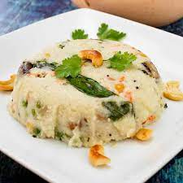

Upma is a savory South Indian breakfast dish made from semolina (rava) and flavored with spices, vegetables, and herbs. It's a versatile dish that can be customized with various ingredients to suit your taste.
Ingredients
- 1 cup Semolina (Rava)
- 1/2 cup Finely Chopped Onions
- 1/2 cup Finely Chopped Tomatoes
- 1/4 cup Finely Chopped Carrots
- 1/4 cup Green Beans, chopped
- 2 tbsp Oil
- 1 tsp Mustard Seeds
- 1/2 tsp Cumin Seeds
- 1/4 tsp Turmeric Powder
- 1 tsp Ginger-Garlic Paste
- Salt to taste
- 2 cups Water
- Fresh Coriander Leaves (for garnish)
Step-by-Step Instructions
- Heat oil in a pan. Add mustard seeds and cumin seeds, and let them splutter.
- Add chopped onions and sauté until translucent.
- Add ginger-garlic paste, and cook for a minute until the raw smell disappears.
- Add chopped tomatoes, carrots, and green beans. Cook until the vegetables
- are tender.
- Add turmeric powder and salt. Stir well.
- Add semolina and roast it for 2-3 minutes until it turns slightly golden brown.
- Pour in the water and bring to a boil. Reduce the heat, cover, and cook until the water is absorbed and semolina is cooked through.
- Garnish with fresh coriander leaves and serve hot with coconut chutney or pickle.